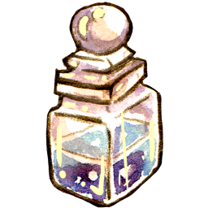

Find the magic
in each moment.
Our Favorite Products & Services
Find everything you need to make your life truly magical! Ranging from herbs & spices to spellcrafts, we have it all at the Apothecary!
Seasonal Magic
A personally curated box of seasonal magic. Choose from an assortment of crystals, herbs, spices, and more!
Tarot Card & Palmistry Reading
Come with questions and get some answers about life, love, and the world!
Spell & Ritual Performance
This is the full package that includes all necessary physical and spiritual elements for a complete ritual!
Meet the Founders
Click on each Founder to learn more about them!
Sandra Griffith, CEO
Livia Baird, CFO
About Us
the Apothecary is Salem's eclectically magical shop. Home to super-natural remedies, curious oddities, whimsical gifts, and magical resources.
the Apothecary was created from the soul intention of offering simple ways to lead an enchanted life. Rooted deeply in creativity and imagination, we encourage you to embrace your inner power, and invites you to challenge your perceptions - to see magic in the mundane, and opportunity in the ordinary. Teas, candles, crystals, books, tarot cards, divination kits, and more, are presented in an approachable, light-hearted atmosphere open for all to explore and experience.
Location:
78 George Street, Salem, Massachusetts
Hours:
- Monday-Wednesday 12:00pm - 6:00pm
- Thursday-Friday 11:00am - 7:00pm
- Saturday 9:00am - 6:00pm
- Closed Sundays
Something wicked this way comes...
If you like what you see and want more updates on our shop, join our mailing list!